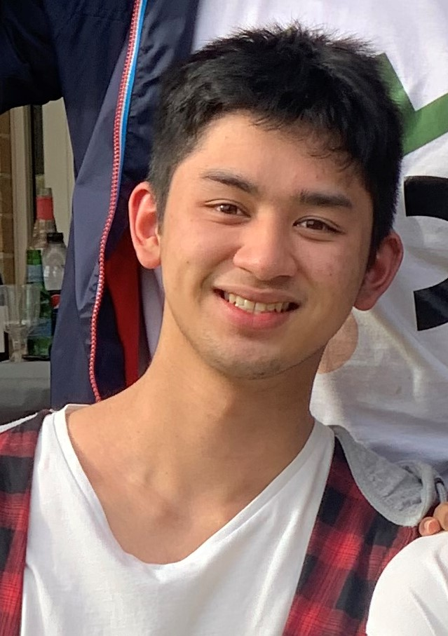
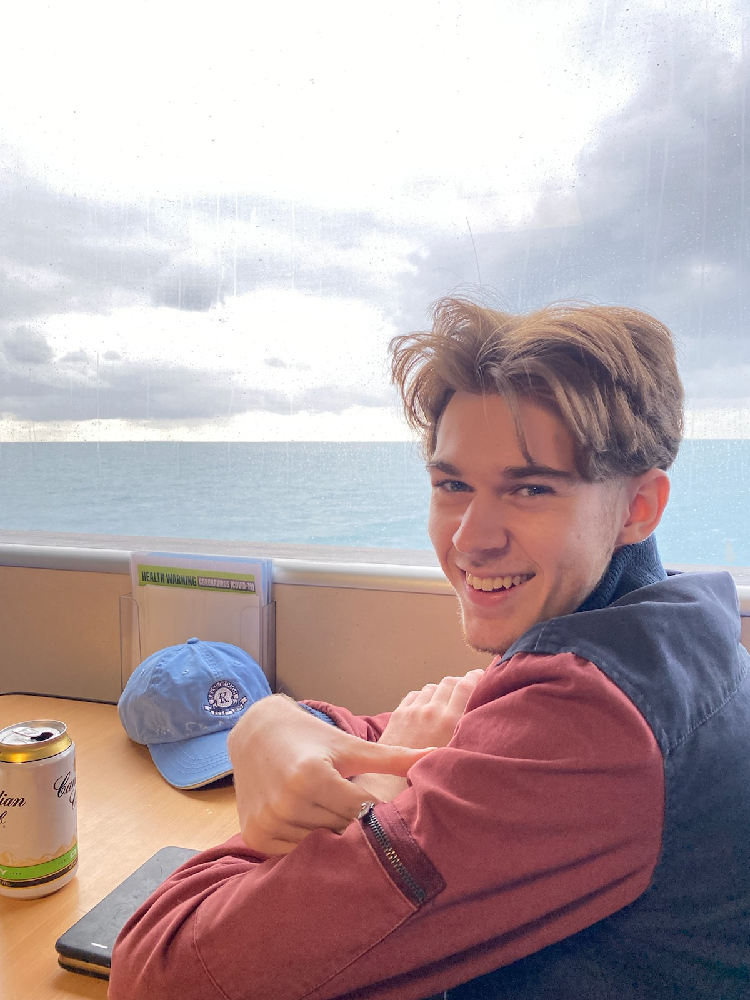
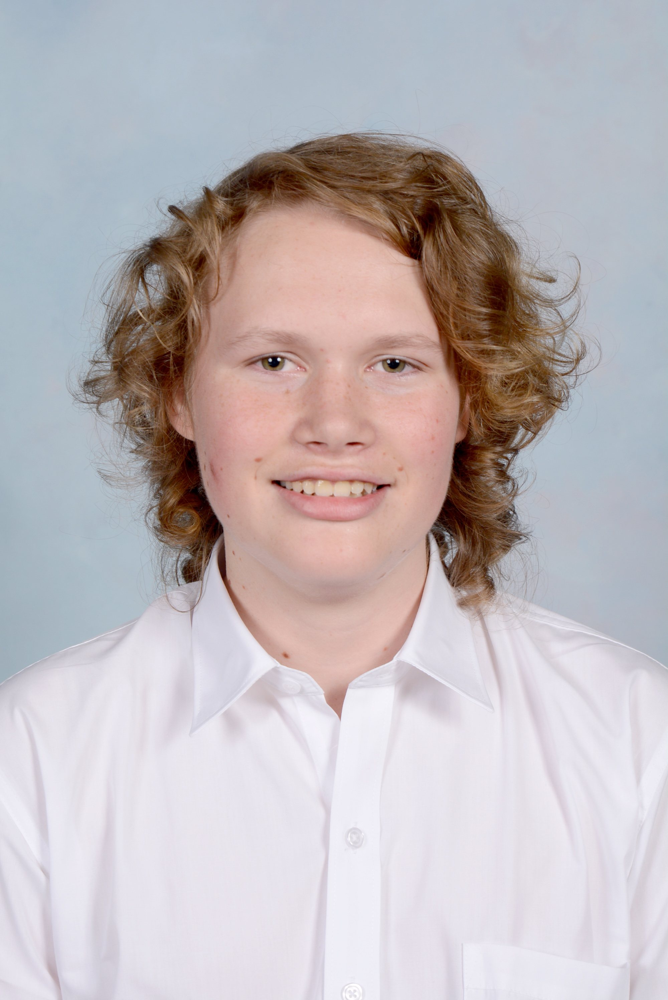
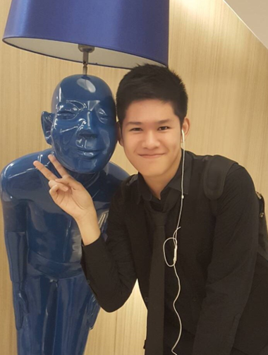

Team Profile

Personal Information
James Tohme

Hello! My name is James Mark Tohme, and my student number is s3897700. I come from Australia and was raised in the Melbourne suburb of Roxburgh Park. I enjoy playing classic video games, listening to pop songs, eating food, and speaking with my friends. My interest in IT swelled greatly as a result of me contributing to the tech-based subjects in Roxburgh College during 2020. I always knew I was going to pursue a career in IT, ever since I was young, learning how computers worked for the first time. What fascinated me the most about IT wasn't so much the exact operations or functions a computer could perform, it was more the paramount variability and options one had when exploring their path in the ever-growing industry. Thanks to my time in Roxburgh College, I was able to pick up essential skills, such as an intermediate knowledge of HTML coding, formatting websites, and a level of understanding on Python thanks to the crash courses I took.
Kenneth Pham
Heya! I’m Kenneth Pham and my student number is s3895797. I am a first generation Vietnamese-Australian; English is my first language while Vietnamese is my second. I also graduated secondary school in 2020 and am undertaking my first year tertiary studies at RMIT, in a Bachelor of IT. While I am studying a STEM subject, I have a passion for the arts, including: drawing and painting, singing and dancing, though some I am more experienced at than others.
My interest in IT stems from seeing programming being used for a game I played. It was not the programming of the game itself but rather individuals from the gaming community who programmed a simulator for the game that introduced me to the applications of IT, which thus sparked my interest in IT. My IT experience thus far is limited to what I have learnt at RMIT, which is to say that prior to my tertiary studies I had scarcely dabbled in IT at all.
Darren Lucky
Greetings! my name is Darren Jonathan Lucky. My student number in RMIT is s3879744. I am Indonesian and I enjoy playing games, meeting new people, learning something new, exercising and learning about cars, whether it is their history or their performance.. My main language is English, and I also can speak Indonesian and Chinese. Now, I am currently studying at RMIT University. I am studying for a Bachelor of IT and I am enjoying my experience at RMIT. My interest in IT started when I was still in primary school, and from there my interest grew. I began learning about databases, learning about the computer parts and when I attended foundation school, I learnt about programming, making a game using Scratch and various other topics that I am eager to learn. My IT experience began when I started primary school and I am continuing it until today. I don't really have a lot of IT experience, besides from school and that's about it. I hope I can expand my experience with RMIT.
Oscar Ascione
My name is Oscar Ascione I was born and raised in Darwin, Northern Territory Australia. I am currently studying at RMIT, Bachelor of Information Technology, my student number s3888205. I did my schooling in Darwin and studied at the Essington School Darwin. Throughout high school, I did a lot of acting through the school system and attending acting classes out of school at a youth group called Corrugated Iron. I acted in an advertisement called ‘Speeding There’s No Future In it’. Currently, I am interested in the cyber security aspect of IT, delving into how companies protect their data and the creative ways cyber security attacks have been completed. My IT experience consists of doing work experience with a company called We Fix IT and another company called Power and water, learning about the mapping software they use for their powerlines
Joshua Renshaw
Hi, I am Joshua Renshaw, student number s3896215. I was born in London England to an English father and a Finnish mother. As a result I am fluent in Finnish, however English is still my first language. I graduated secondary school in 2020 and am now taking a bachelors of IT course at RMIT. I enjoy video games, chess, soccer and cricket and almost anything to do with technology. My interest in IT sparked when I was given an old laptop when I was 9 or 10 because I wanted to play video games. I quickly determined that said laptop was not powerful enough to play the games I wanted to play, and I therefore decided to learn about computers in the hopes to someday have a more powerful one. Fast-forward to present day, and I have built 2 fairly powerful computers for myself in the past 5 years and have gained an interest in many other aspects of IT, including networking hardware and machine learning.
Mark Christopher
Heyyo! My name is Mark Tyrell Christopher,student number 3870180. I was born and raised in Indonesia. I've picked up digital art as a hobby and enjoy doing it on my leisure since I've learned the basics from school.I'm also slowly building my skills as a video editor. I graduated from highschool on 2020 and I’m furthering my education at RMIT where I'm studying for a Bachelor of Information Technology. My interest in IT began very early on when a relative of mine showed a game they made with their small team. I admire the game, as it was the first game I've ever experienced with a story, world, and fleshed out characters. As the technology of video games grew, my interest in video game making grew and I knew a job in the technology industry specifically in the video game industry was what I desired, as video games can build connections between people and give memorable experiences. The skills I have at the moment are those that I’m studying from my subjects at RMIT and hopefully I can learn more to reach my goals.
Personality Tests
The following are results from three different personality test taken by each of the group member. They're a reflection of the groups components and serves as information on how the group balances of eachother.
From the Myers Briggs Type Indicator, almost every outcome of the test resulted in a different personality just a couple carried similar personality trait being differentiated by only a single indicator.Looking at each attribute, Each type indicated by a letter has an even spread .The balance between extraverted and introverted ensures that group members can work both in groups and individually,not heavily favoring only one way.Not having an over reliance on an individual or smaller group also helps in managing team meetings as the balance makes groups meetings more efficient all the while having individual work be effective.There's also an even amount of the attribute intuitive and observant .Having both intuitive and Observant traits means that with information gathered,the team can not only imagine future potential with the use of the information given,but also have it be practical and with that members of the team can use eachothers prespective to maximize the result for the group,not keeping things too narrow minded .One of the attribute that leaned more on one side is the feeling attribute,compared to its counterpart the thinking attribute.The feeling trait means that the group makes decisions more based on personal values. The team would more likely approach a particular problem while considering its impact on people first.Though it is a great trait to have, having less dependency on logic might result in team choices that comes as more irrational and emotional.Similar to the previous attribute, the prospecting trait is much more apparent in the group,with every member having the trait ,contrast to the judging trait.The group is more flexible on dealing with decisions and unprecedented challenges.The trait however leads to more carefree attitude and leaves decision making on impulse,which could be bad for the team if left unaccounted for.While having an uneven result on some of the trait might leave blind spots, it is valuable to know the strengths and weaknesses of the team so moving forward the group can minimize the flaws and capitalize on the positives for a greater outcome.
The groups learning style is varied,leaning on an activist style.This means a more hands on approach,learning by doing and having an open mind upon experiencing new things.The group is also able to learn in a reflector way,observing and thinking about what happened ,reviewing the events that happened after invloving themselves on a first hand.Both learning syle is especially good for work in teams, as both excell with multiple people willing to help.The group learns well and would gain a lot of information from problem solving and group discussion,aswell as feedback from one another.The group also has a higher preference on learning visually.This could work well for the group as it lets the team visualize decisions easily and could make the team understand new concepts better with images and keywords.
From the big 5 personality test, The group has a higher affinity on aggreeableness. The team is optimstic and puts others' needs above their own,prioritizing cooperation.This makes sure each member is not left behind and that is great for the workflow of the team as it lets every individual do their parts to their best capabilities.the group also scores high on the intellect ,letting the group think in a more abstract and imaginative way,great in a group setting where ideas with a lot of potential can be crucial to a group success.The group does not excell at Conscientiousness however ,which could bring the team down as it leaves the team more disorganized,impuls reliant, and easily sidetracted.
These are the analysis of the group's tests and understanding the results is detrimental to a groups long term accomplishment.These results are not set in stone and knowing each members strenght and weaknesses,along with the group's will improve the way the team works .Knowing what to avoid and the things that can be helpful for the group will in the end improve work quality and efficiency,resulting in a more desirable outcome. Team members can have either complementary or contrasting personalities,combining different views and prespectives, along with sharing experiences on how members handle obstacles and problems in front of them will in the end better teamwork, communication , and trust .